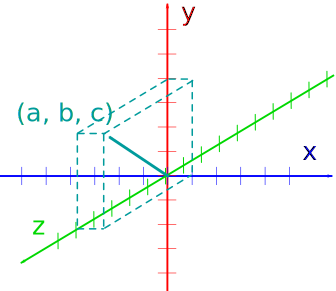
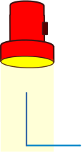
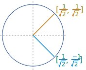
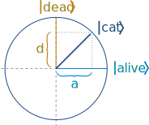

Bra-Ket Notation
Also called Dirac Notation.
Bra-Ket is a way of writing special vectors used in Quantum Physics that looks like this:
bra|ket
Here is a vector in 3 dimensions:

We can write this as a column vector like this:
Or we can write it as a "ket":
But kets are special:
- The values (a, b and c above) are complex numbers (they may be real numbers, imaginary numbers or a combination of both)
- A ket is a quantum state
- Kets can have any number of dimensions, including infinite dimensions!
The "bra" is similar, but the values are in a row, and each element is the complex conjugate of the ket's elements.
Example: This ket:
Has this bra:
The values are now in a row, and we also changed the sign (+ to −, and − to +) in the middle of each element.
In "matrix language", changing a ket into a bra (or bra into a ket) is a "conjugate transpose":
- conjugate: 2−3i becomes 2+3i, etc...
- transpose: rows swap with columns
Read more at Matrix Types.
Multiplying
Multiplying a bra a and ket b looks like this:
a|b
We use matrix multiplication, in particluar the dot product:
The "Dot Product" is where we multiply matching members, then sum up:
We match the 1st members (1 and 7), multiply them, likewise for the 2nd members (2 and 9) and the 3rd members (3 and 11), and finally sum them up.
In effect, the dot product "projects" one vector on to the other before multiplying the lengths:
 |
 |
|
| Like shining a light to see where the shadow lies |
When the two vectors are at right angles the dot product is zero:

No shadow is cast!
Example:

So:
This can be a simple test to see if vectors are orthogonal (the more general concept of "at right angles")
The dot product of a vector with itself is the length of the vector times the length of the vector. In other words it is length2:
Full shadow is cast!
Example:
So:
The dot product is 5
And we can also work out c's length to be √5
Example: What is the length of the vector [1, 2, −2, 5] ?
The dot product is 34, so the vector's length is √34
Note: we can also use Pythagoras' Theorem to calculate its length:
√(12 + 22 + (−2)2 + 52) = √34
Basis
We can separate the parts of a vector like this:
The vectors "1, 0, 0", "0, 1, 0" and "0, 0, 1" form the basis: the vectors that we measure things against.
In this case they are simple unit vectors, but any set of vectors can be used when they are independent of each other (being at right angles achieves this) and can together span every part of the space.
Matrix Rank has more details about linear dependence, span and more.
Orthonormal Basis
In most cases we want an orthonormal basis which is:
- Orthogonal: each basis vector is at right angles to all others.
We can test it by making sure any pairing of basis vectors has a dot product a·b = 0 - Normalized: each basis vector has length 1
Our simple example from above works nicely:
The vectors are at right angles,
and each vector has a length of 1
And this one also works:

Let's check it!
Is the dot product zero?a·b = 1√2×1√2 + 1√2×−1√2
= 12 − 12 = 0
Is each length 1?
|a| = (1√2)2 + (1√2)2 = 12 + 12= 1
|b| = (1√2)2 + (−1√2)2 = 12 + 12= 1
So yes it is an orthonormal basis!
Schrödinger's Cat

A famous example is "Schrödinger's Cat": a thought experiment where a cat is in a box with a quantum-triggered container of gas. There is an equal chance of it being alive or dead (until we open the box).
It can be written like this:
cat = 1√2alive + 1√2dead
It says the state of the cat is in a superposition of the two states "alive" and "dead".
But why the 1√2 ?
First let us illustrate it like this:

The basis is the two vectors alive and dead. The cat is shown in that probability space as a vector with equal components a and d.
Now let us normalize it!
Normalized
A normalized vector has a length of 1.
We know the dot product of a vector with itself is length2, so a normalized vector has:
Example: Normalizing the cat vector
If we assume a = d = 1 we get this:
But it should be 1, right?
Let us try 1√2:
So a = d = 1√2, and we get:
cat = 1√2alive + 1√2dead
And it now has a length of 1
Probability
Let us try to find the probability by adding the component lengths a and d:
Probability = 1√2 + 1√2
= 2√2
= √2 ???
But that can't be right, probability can't be greater than 1
In fact we need to take the magnitude of each vector (shown using ||) and square it:
Probability = |1√2|2 + |1√2|2
= 12 + 12
= 1 (yay!)
This is a general rule in Quantum Physics:
Probability = |Amplitude|2
The || means magnitude of a vector, not absolute value.Naming Kets
Notice how we are free to use any word or symbol inside the ket. In some cases numbers are also used, but they are used as labels so don't try to do arithmetic with them.
Many Dimensions
We can easily have many dimensions.
Imagine "Quantum Dice" that are in a superposition of 1, 2, 3, 4, 5 and 6.
The ket looks like this:
For a fair die all elements (a, b, c, d, e, f) are equal, but your dice may be loaded!
Why?
Why do we do all this?
So we can "map" some real world case (usually one with probabilities) onto a well-defined mathematical basis. This then gives us the power to use all the math tools to study it.